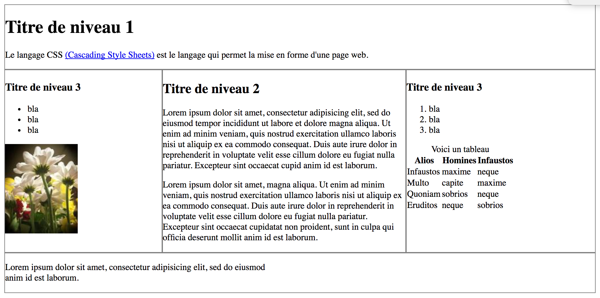
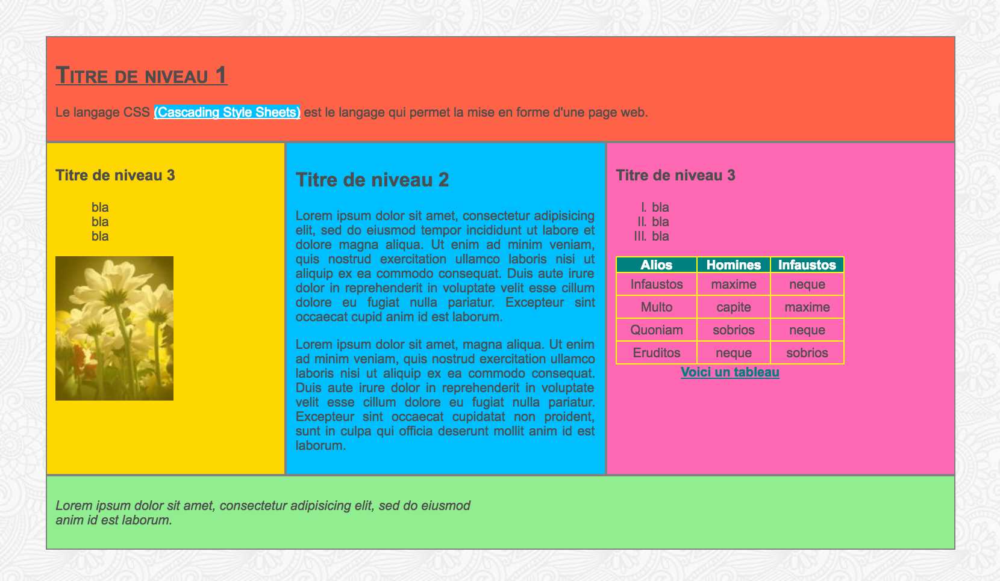
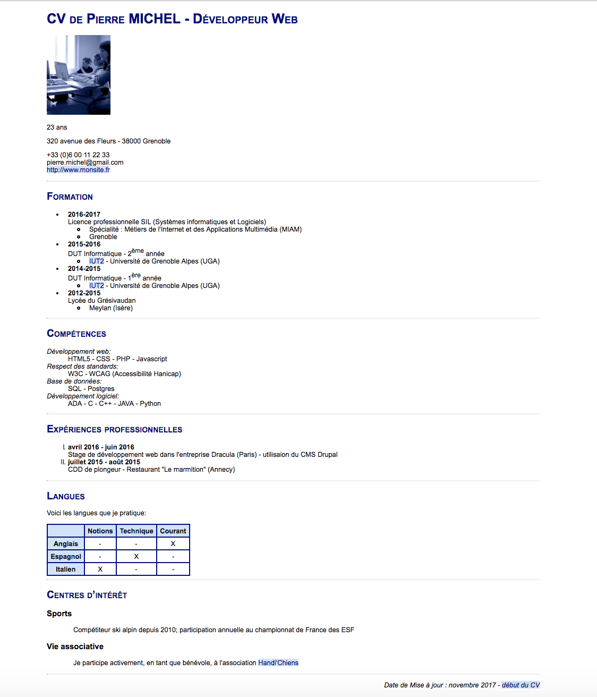

Université de Grenoble Aples - IUT2 - Département informatique
M1105 - Web
TP 2
Introduction au langage CSS
Les styles de base
Objectifs du TP
- Apprendre les bases du langage CSS
Ce document est consultable sur la plateforme Chamilo du département.
Qu'est-ce que CSS?
Le langage CSS (Cascading Style Sheets) est le langage qui permet la mise en forme d'une page web.
Une feuille de style (par exemple style.ccs) accompagne la page HTML et indique au navigateur comment il doit afficher les différents éléments de la page, comment ces éléments se positionnent les uns par rapport aux autres.C’est ainsi qu’est défini le design des pages web (style de base + positionnement)
Aujourd'hui, vous allez voir les principales règles pour les styles de base (polices de caractères, mise en forme du texte, couleur,...) et au TP suivant, vous verrez le modèle de "boîte" et le positionnement des "boîtes"
Exercices
Préparation
- Créer un répertoire TP2 dans votre répertoire M1105
- Se positionner dans ce répertoire TP2
- Recopier dans votre répertoire TP2 le contenu du répertoire /users/info/pub/1a/M1105/tp2
- Ouvrir avec l'éditeur Atom les deux fichiers page1.html, stylePage1.css
- Visualiser avec Firefox la page page1.html
Voici à quoi ressemble cette page :

Vous remarquerez en faisant varier la largeur de la fenêtre de votre navigateur que les différentes divisions de page1.html se réarrangent.
C'est parce qu'il y a dejà des règles de style de positionnement (positionnement "flexbox") dans le fichier stylePage1.css.
Vous pouvez bien sûr examiner le code de ces règles, mais vous n'avez pas besoin de les modifier.
Vous allez compléter la feuille de style (fichier stylePage1.css) afin d'avoir les propriétés listées ci-dessous.
Bien ranger les règles aux bons emplacements dans le fichier stylePage1.css.
Mais dans un premier temps, commencer par étudier le code de page1.html pour bien comprendre la structuration et les différents éléments.
Pour vous donner une idée de ce que vous allez devoir obtenir, vous pouvez regarder ci-dessous le rendu final (3.8).
Attention! le langage CSS est très riche et vous ne pouvez pas connaître par coeur ce langage.
Vous devez donc travailler avec de la documentation en ligne.
Voici trois documents recommandés:
Attention! Vous vérifierez régulièrement la validité du code CSS grâce à un validateur CSS.
Vous utiliserez par exemple le validateur CSS du W3C, accessible à l'adresse :
https://jigsaw.w3.org/css-validator/validator.html.fr
Propriétés des polices de caractères et mise en forme du texte
Définir les règles de style suivantes:
- pour l'élément body, c'est-à-dire pour toute la page:
- la police de caractères (font en anglais) sera Arial, ou Verdana ou une police "sans-serif"
- la taille par défaut de la police de caractères (correspondant à celle des paragraphes) sera de 0.9em.
- la couleur par défaut de la police de caractères sera #4D4D4D
- pour tous les éléments h1:
- la police de caractères sera soulignée
- la police de caractères sera de type small-caps
- pour tous les éléments p de la section (attention! bien choisir votre sélecteur;
voir la liste des sélecteurs sur le site w3schools ):
- pour tous les éléments p du footer :
- la police de caractères sera mise en italique
Vérifier la validité du code CSS.
Propriétés de marges extérieures (margin) et de marges intérieures (padding)
Consultez la documentation du site W3schools.com, car vous n'avez pas vu les marges en cours.
Définir les règles de style suivantes:
- pour l'élément body:
- ajouter une marge extérieure de 50px (en haut, en bas, à droite et à gauche)
- pour chacune des 5 grandes divisions (1 header, 1 section, 2 divisions aside, 1 footer):
- ajouter une marge intérieure de 10px (en haut, en bas, à droite et à gauche)
Propriétés de couleur et propriétés de fond
Pour les couleurs, vous pouvez utiliser par exemple le site de w3schools.com (mais il y en a beaucoup d'autres!).
Définir les règles de style suivantes:
- pour l'élément body:
- ajouter une image de fond (bg-198-198.png); tester plusiers mode de positionnement, de répétition ou non,...
- pour chacune des grandes divisions:
- mettre une couleur de fond (vous choisirez vos couleurs et votre notation);
- pour l'image (la fleur)
- ajouter une opacité (0.6 par exemple)
Propriétés des listes
- la numérotation de la liste ordonnée sera : I. II. III …
- supprimer la puce de la liste non ordonnée
Propriétés des tableaux
- mettre en forme le tableau, tel que montré ci-dessous (vous pouvez vous référer à l'exemple vu en cours)
Propriétés des liens (pseudo-classes)
- Apparence du lien par défaut : fond bleu, police de caractères soulignéede couleur blanche
- Apparence du lien lorsque la page a déjà été visitée : fond mauve, police de caractères soulignée de couleur blanche
- Apparence du lien lorsqu’on pointe dessus : fond blanc, police de caractères de couleur bleue
- Apparence du lien lors du clic de la souris : fond blanc, police de la même couleur que celle du fond de la division header
Rendu final à obtenir
Voici le résultat final (pas vraiment joli... mais la semaine prochaine, cela s'arrange!!):

Design du CV
Faire une feuille de style afin que votre CV ressemble à cela:

Quelques indications:
- la famille de polices de caractère est Arial, sans-serif
- la couleur bleu marine est #000080
- la couleur bleu clair est #D0E3FA
- les titres h1 et h2 utilisent une variante de police de caractères "small-caps"
- la liste numérotée est de la forme: I. II. III. …
- le texte du pied de page est en italique et positionné à droite
- et pour le reste, à vous de faire!
Lors d'un prochain TP, vous finaliserez votre CV en positionnant les éléments et nous ajouterons une bannière.
Pour finir
- Compléments à faire sur la page1:
- Enlever l'opacité quand on passe sur les images
- Ajouter une ombre au titre h1
- Il est possible de numéroter automatiquement les titres h1, h2,… c'est ce qui est fait pour ce sujet de TP. Comment faire?
- Tester le "pseudo-element first-letter" que l'on applique à un paragraphe
- Faire les exemples sur le site w3schools.
- Consulter la liste des sélecteurs sur le site w3schools. Quels sont ceux que vous connaissez bien maintenant?
- Revenir au TP1 et faire les question 6. et 7. (nouvelles questions)